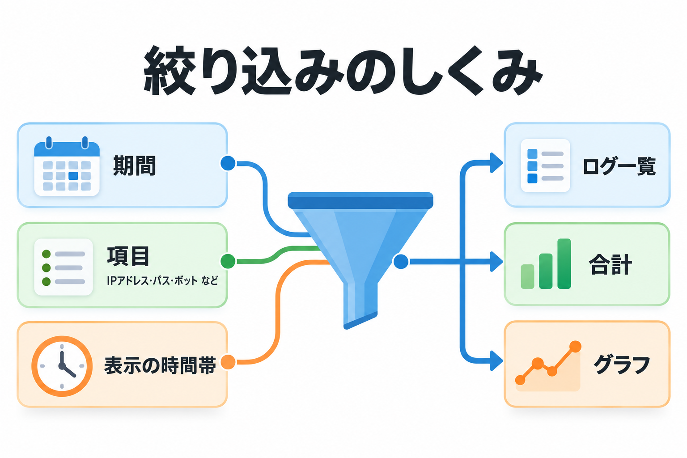
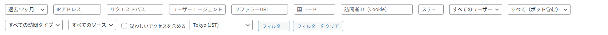
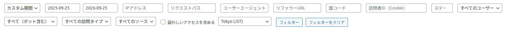
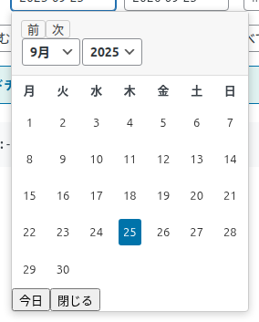

絞り込み
期間や IP アドレス、ボットかどうかなど、16 の条件でログを絞り込めます。条件は一覧・合計・グラフのすべてに同時に効きます。


使い方
期間を選び、必要な条件を入力・選択します。空欄の条件は使われません。
「フィルター」を押します。ページが読み直され、条件に合うログだけが表示されます。
条件はページの URL に残ります。よく見る条件はブックマークしておくと、次から 1 回で開けます。初期状態に戻すには「フィルターをクリア」を押します（過去 1 ヶ月・UTC に戻ります）。
名前のないプルダウンは、マウスを乗せると役割が表示されます（左から「期間プリセット」「ユーザーログイン状態でフィルター」「ボット検出でフィルター」「訪問タイプでフィルター」「ログソースでフィルター」）。
期間
左端のプルダウンで、表示する期間を選びます。初期値は「過去1ヶ月」です。
| 選択肢 | 表示される期間 |
|---|---|
| 過去24時間 | 今の時刻から、ちょうど 24 時間前までです。 |
| 過去1週間 | 1 週間前の日付の 0 時から、今日の終わりまでです（日付で数えるので最大 8 日分）。 |
| 過去1ヶ月 | 1 ヶ月前の同じ日の 0 時から、今日の終わりまでです。 |
| 過去3ヶ月 / 過去6ヶ月 / 過去12ヶ月 | それぞれ 3・6・12 ヶ月前の同じ日から、今日の終わりまでです。 |
| カスタム期間 | 「開始日」「終了日」の欄が現れ、好きな範囲を選べます。 |
カスタム期間


- 開始日はその日の 0:00:00 から、終了日はその日の 23:59:59 までが対象です。
- 片方だけ入れても使えます（開始日だけなら「その日以降すべて」）。
- 両方とも空のまま「フィルター」を押すと、期間の制限なし（すべての期間）になります。
- ほかの期間から「カスタム期間」に切り替えると、それまで選んでいた期間の日付が入った状態で欄が現れます（上の画像は「過去12ヶ月」から切り替えたところ）。そこから日付を変えて使えます。
- カスタム以外の期間に切り替えると、日付の欄は空に戻ります。
日付は、右端で選んだ「表示タイムゾーン」の日付として扱います。「Tokyo (JST)」を選んでいれば、日本時間の 0 時〜24 時です。
文字で絞り込む条件（7 つ）
入力した文字を含むログが表示されます（ステータスだけは完全一致）。大文字と小文字は区別しません。
| 条件 | 絞り込み方 | 使い方の例 |
|---|---|---|
| IPアドレス | IP アドレスの一部に一致 | ある相手のアクセスだけを見る。一覧の IP アドレスを押しても同じ絞り込みになります。 |
| リクエストパス | 開かれたページのパスの一部に一致 | /blog/ でブログの記事だけを見る |
| ユーザーエージェント | ブラウザやボットの名前の一部に一致 | Googlebot で Google のクローラーだけを見る |
| リファラーURL | 参照元の URL の一部に一致 | google. で Google から来た訪問を見る |
| 国コード | 国コードの一部に一致 | JP で日本からの訪問を見る |
| 訪問者ID（Cookie） | 訪問者 ID の一部に一致 | ある訪問者がたどったページを順に見る |
| ステータス | 応答の状態を表す番号（100〜599）と完全一致 | 404 で見つからなかったページを見る |
文字の条件を使うと、ログから直接数えるため表示に時間がかかることがあります。まず期間を短くしてから文字で絞り込むと速くなります。
選んで絞り込む条件（4 つ）
| 条件（初期値） | 選択肢と結果 |
|---|---|
| ユーザー（すべてのユーザー） | 「すべてのユーザー」: 絞り込まない ／ 「ログイン中」: WordPress にログインしていた人のアクセスだけ ／ 「非ログイン」: ログインしていなかったアクセスだけ |
| ボット（すべて（ボット含む）） | 「すべて（ボット含む）」: 絞り込まない ／ 「ボット: はい」: ボットと判定したアクセスだけ ／ 「ボット: いいえ」: 人（ボットではない）と判定したアクセスだけ |
| 訪問タイプ（すべての訪問タイプ） | 「新規」「リピーター」「ページ遷移」「不明」のどれかだけ。決まり方は「記録のルール」。「不明」は、主に CSV から取り込んだ記録で、訪問タイプの列がなかったものです。 |
| ソース（すべてのソース） | 「WordPress」: WordPress のページへのアクセス ／ 「静的ページ」: 静的ページの計測で記録したアクセス。CSV から取り込んだ記録だけを選ぶ選択肢はありません（「すべてのソース」で表示されます）。 |
疑わしいアクセスを含める
チェックボックスです。初期値はオフです。
| 状態 | 結果 |
|---|---|
| オフ | ページの URL か User-Agent に「疑わしいキーワード」（設定タブで決めます）を含むアクセスを、一覧・合計・グラフのすべてから除きます。攻撃の試みやスキャナーのアクセスで数字がふくらむのを防ぎます。 |
| オン | それらのアクセスも含めて表示します。攻撃の試みがどれくらい来ているかを確かめたいときに使います。 |
ここで除くかどうかはキーワードだけで決まります。エラー（404 など）になったアクセスは、キーワードを含まなければ除かれません。一覧の赤い印（⚠）の基準とは少し違います。→ 疑わしいアクセスの印
表示タイムゾーン
時刻の表示、日付の条件の区切り、アクセスの推移グラフの日付の区切りに使う時間帯です。初期値は「UTC (Default)」です。
| 選択肢 | 時間帯 |
|---|---|
| UTC (Default) | 世界標準時 |
| Tokyo (JST) | 日本時間（UTC より 9 時間進んでいます） |
| New York (EST/EDT) | 米国東部時間 |
| Los Angeles (PST/PDT) | 米国太平洋時間 |
| London (GMT/BST) | 英国時間 |
| Paris (CET/CEST) | 中央ヨーロッパ時間 |
この画面は、WordPress の「一般設定」のタイムゾーンを使いません。日本のサイトでも初期値は UTC なので、日本時間で見るときは毎回「Tokyo (JST)」を選ぶか、選んだ状態の URL をブックマークしてください。なお、ログの削除とエクスポートの日付は、WordPress の「一般設定」のタイムゾーンで扱います。
組み合わせの例
| 知りたいこと | 条件 |
|---|---|
| 検索エンジンのクローラーが来ているページ | ボット「ボット: はい」＋ ユーザーエージェント Googlebot |
| AI のクローラーのアクセス | ボット「ボット: はい」＋ ユーザーエージェント GPTBot・ClaudeBot など |
| 見つからないページ（リンク切れの手がかり） | ステータス 404 ＋ ボット「ボット: いいえ」 |
| ある記事を読んだ人がどこから来たか | リクエストパスに記事の URL の一部 ＋ グラフの「リファラードメイン」 |
| 攻撃の試みが来ているか | 「疑わしいアクセスを含める」をオン ＋ ステータス 404 や ユーザーエージェント |